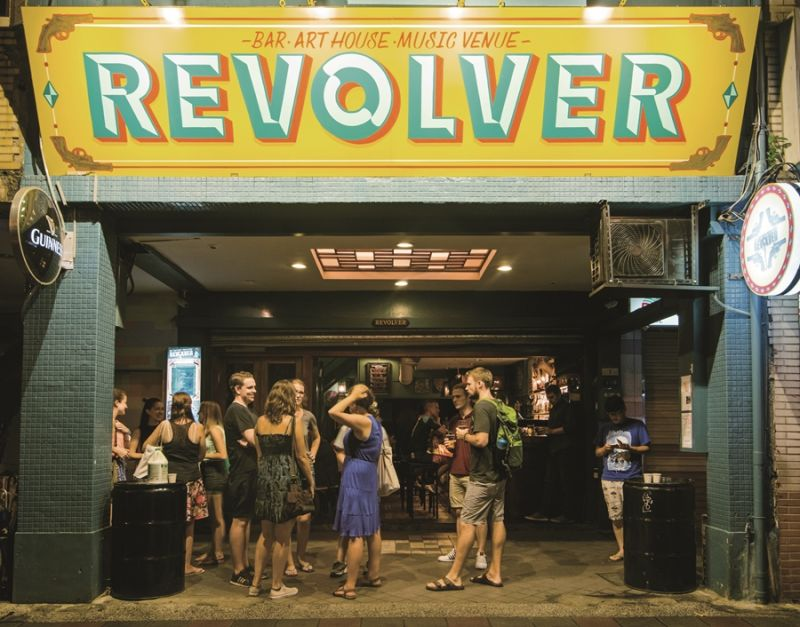

路過的人們可能會覺得迴異，甚至會主動問說，為什麼要在一間酒吧的面前排那麼長的隊伍阿? 小小的店面塞滿了人，他們總拿著酒杯高談闊論，或坐或站，永遠聊個沒完。別小看你經過的這間店，它可是台北青年人間鼎鼎大名的聚會場地─Revolver左輪手槍。
成立於2010年底的Revolver，開業迄今已滿十一年，在這十一年間，Revolver快速地在台北市的酒吧間竄起，成為愛樂青年、嗜酒者與外國人的重要聚集地。Revolver不僅是單純的酒吧，它還擁有一個迷你的live house場地，且幾乎每日安排表演。近幾年許多新興的獨立樂團都曾在Revolver有過演出。
Revolver能夠這麼獨一無二的原因，是由於他們致力於豐富並拓展台灣硬地音樂的異質性和多元化，不斷邀請國內外優質的音樂人，以及各路獨立創作者和愛好次文化的夥伴們來此交流，讓各種文化都能透過這個空間傳達彼此的感受與愛。
Revolver的英籍老闆Jeremy（人稱Jez）說，「我們很清楚自己的角色和定位，而且知道我們想吸引的客人是什麼模樣。我們也不打算為賺錢去搞喝到飽或淑女之夜特價。再說有個live house在二樓，幾乎天天有表演，人自然就會聚攏過來。」這便是為何Revolver能在短短幾年的時間內就在台北站穩腳步。
地址: 台北市中正區羅斯福路一段1-1號
交通: 只要從中正紀念堂站4號出口走路一分鐘就能抵達!